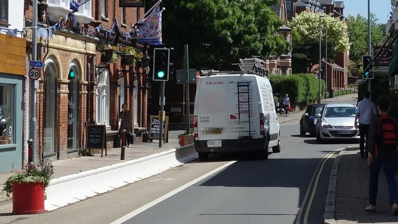
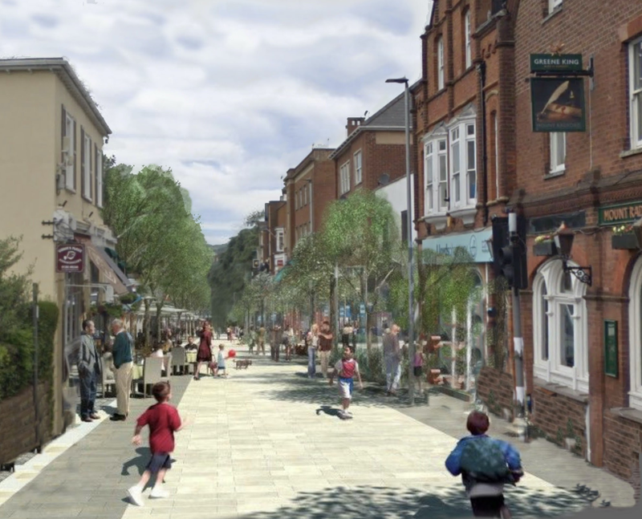
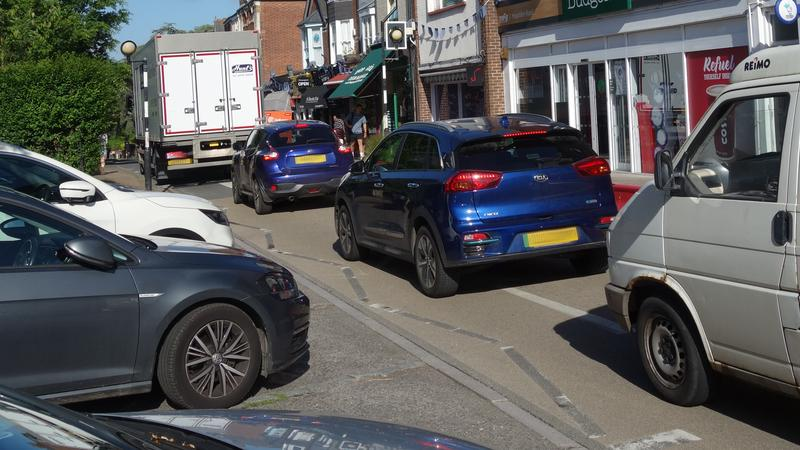

On Monday morning, as people return to work after the long bank holiday weekend, Exeter’s Highways and Traffic Orders Committee (Exeter HaTOC) is expected to approve expenditure of £900,000 to make temporary changes to a 200 metre section of Magdalen Road permanent.
The changes were introduced two years ago under emergency coronavirus powers during the first wave of the pandemic to facilitate pedestrian social distancing beside the retail traders which line this stretch of the street.
They involved repurposing the eastbound traffic lane to widen the pavement behind a temporary barrier, which is interrupted by three loading bays, and to make space for a painted cycle lane.
Motor vehicles travelling in that direction have been diverted onto other routes while access to the street’s fifteen free car parking bays remains from its eastern end.
 Having driven up the street the wrong way along the cycle path, a van continues east through the Mount Radford traffic lights.
The temporary changes caused considerable controversy and have since been the subject of three consultations and a trio of reports by the local transport authority, Devon County Council.
None of its reports include any data on vehicle access and parking despite much of the controversy focussing on arguments around these issues in relation to the street’s retail traders.
The county council could not explain this omission when asked. Its principal public consultation on the changes did not provide any street usage data at all, despite inviting respondents to choose between four street use options, and only mentioned unspecified delivery costs and timescales for the low traffic street option, apparently in order to discourage respondents from choosing it.
When a decisive majority did then choose it, the county council’s report on the consultation misrepresented its results, which it did not publish until after a decision had been taken in favour of keeping the changes that had already been made.
This option only had the support of 18% of respondents but the county council nevertheless recommended it. 25% wanted to return the street to two-way traffic.
In making this recommendation the county council also prioritised the views of just ten of the street’s retail traders over those of nearly 1,500 local residents and frequent visitors to the area.
It now wants Exeter HaTOC to cement these changes in place, claiming they will reduce pollution and greenhouse gas emissions and encourage modal shift away from car use despite providing no evidence to support these claims.
It has nevertheless admitted that westbound traffic and traffic on adjacent roads have both increased and the changes have made car journeys in the area longer.
 Magdalen Road low traffic street visualisation. Image: St Leonard’s Neighbourhood Association.
How has Devon County Council contrived to arrive at a recommendation to spend so much public money on changes that so few people want instead of delivering the changes supported by the majority?
By the time Exeter HaTOC met in July last year to consider the public consultation results, twelve months after the temporary changes had been introduced, it was clear that there were numerous strong opinions on all sides of the argument.
St Leonard’s Neighbourhood Association had already conducted a large poll which produced hundreds of critical comments and a similar volume of positive feedback.
It nevertheless found strong support for discussion of permanent pedestrian improvements alongside vehicle traffic reductions, and also generated around 150 suggestions for improvements to the scheme, many of which were in favour of some form of low traffic street layout.
Lorries are unable to avoid blocking the cycle lane when parked in the HGV loading bay and their drivers are forced to unload in front of oncoming traffic.
The county council provided the July committee meeting with a report which summarised the consultation results instead of publishing them.
It did not publish them until after the meeting had been held and the decision to make the changes permanent had been taken.
The county council’s summary report was replete with statements which misrepresented the results.
It paraphrased the result that 53% of respondents wanted a low traffic street as the option “preferred by the greatest number of respondents”.
Instead of stating that only 18% wanted to make the temporary changes permanent, it said this option “also received more positive (agree/strongly agree) than negative (disagree/strongly disagree) responses”.
(When the consultation results did appear these figures were presented as “>50%” and “20%”.)
The report then went on to say that while a low traffic street “would provide the best environment for pedestrians and cyclists and provide additional street space for pavement cafes and ancillary business activity”, removing parking “could be detrimental to some of the traders”.
The HGV loading bay is opposite the turn to Wonford Road, making that section of the street more dangerous for eastbound cyclists when lorries are parked there.
The report’s 300-word “options discussion and appraisal” section then combined the misrepresented findings.
It mentioned in passing that 85% of respondents identified pedestrian facilities as their highest priority, but failed to mention that more people also wanted clean air, pavement cafes, wider footways and seating as well as cycling facilities than wanted on-street parking.
It then rejected both options to reverse the one way setup, on the grounds that a majority disagreed with them, without mentioning that a majority also disagreed with making the temporary changes permanent.
Instead of then concluding that it should deliver a low traffic street as the only option with majority support, further corroborated by the finding that 75% of respondents wanted to reduce through traffic to provide more space for pedestrians and cyclists, it said “the most deliverable option” was to make the temporary changes permanent.
It said this was because a low traffic street “would be the most expensive of the options to deliver and likely to require external funding” which “would create the risk of a significant delay”, but provided neither costings, nor funding, budget or design options, nor delivery timescales to support this claim.
The county council says it hopes that “widening the bays will make parking easier”. Widening the bays will not make prevent vehicles obstructing both lanes during parking manoeuvres.
Nor did the report make clear that the 50:50 split it found between those retail traders in favour of and those against reducing through traffic represented only one third of the street’s 29 retail traders on each side of the argument.
The preferences of the other third were not included. (Since the scheme was introduced one third of the street’s retail traders have changed.)
It did not explain how it had weighted the views of twenty retail traders against those of nearly 1,500 other consultation respondents, almost all of whom were local residents or frequent visitors to the area.
More than 1,100 of them were in favour of reducing through traffic to provide more space for pedestrians and cyclists and nearly 1,300 identified pedestrian facilities as the most important priority.
 Despite being a principal arterial cycling route more commercial vehicles passed through the street during our Saturday morning survey period than bicycles. The weather was set fair.
None of the nine Labour councillors present at the meeting challenged these misrepresentations, omissions or sophistic conclusions.
Apart from Conservative Percy Prowse, all the committee members duly voted to do what the county council wanted: to take the steps necessary to make the temporary changes permanent.
Fast forward twelve months to a final report to next Monday’s Exeter HaTOC meeting which summarises a third consultation that finished in April, this one on the detail of the permanent changes.
This found that even when asked to support making the temporary changes permanent with no other options on offer, only 51% of responses from the St Leonard’s area were in favour.
It also found that the number of respondents who support some form of low traffic street layout equals the number who support making the temporary changes permanent, but disguised this by grouping the responses separately in a table tucked away in an appendix.
It cited the previous public consultation as a basis on which to reject responses proposing full pedestrianisation, despite its results, and claimed that “total traffic volumes across the area” had been reduced despite also admitting that traffic and pollution in nearby streets had increased.
In response to several objections that the county council does not listen to residents, it said: “The scheme has been developed following several phases of consultation, the results of which have been considered in developing these proposals”.
A multi-drop parcel van driver parked in the cycle lane ten metres beyond an empty loading bay shortly before another delivery driver parked on the pavement opposite the same empty bay.
The report also confirmed that westbound Magdalen Road motor traffic had increased since the changes were introduced to around 3,100 vehicles between 7am and 7pm each day.
The permanent contraflow cycle lane will nevertheless not be physically segregated from traffic because it will be “advisory rather than mandatory”, nor will the fact that vehicles using the loading bays obstruct it be addressed.
The report still claims that the 200 metre scheme is likely to “make cycling a safe and attractive option for a wider range of people including, for example, children”.
It also evaluates it as providing the maximum possible impact on strategic priorities including “responding to the climate emergency”, “investing in Devon’s economic recovery” and “improving health and well being”.
Temporary changes made permanent: detailed plans for Magdalen Road.
Exeter Observer performed a survey of its own last week, to gather some of the data on vehicle access and parking that has been conspicuously absent from the county council’s reports, and so take a snapshot of how people actually use the current arrangements.
We counted cars, motorcycles, commercial vehicles and bicycles entering and exiting the street during three one-hour periods on Friday and Saturday morning while also monitoring loading bay and car parking bay use.
We found that more than 90% of the motor vehicles passing the shops are through traffic and almost all of the limited use of the Magdalen Road parking bays is driven by convenience rather than necessity.
We found that an average of 276 motor vehicles per hour used the street, among which an average of 25 per hour arrived to park: just 9%.
Vehicles that parked and left during our survey periods stayed an average of 14 minutes. Only seven motorists parked legally for longer than 30 minutes, none of whom appeared to visit the shops.
Twelve other vehicles were parked illegally for more than an hour, one of which was there all morning and another which was parked in a loading bay.
Only a handful of parking bay users who returned to their vehicles during our survey periods were carrying more than a single shopping bag. Many were not carrying anything at all.
A striking proportion of large SUVs with only one occupant parked during our survey periods, while several drivers left their engines running throughout their stays, one for nearly an hour.
We confirmed that some nearby residents drive their cars to Magdalen Road shops for convenience because there is nothing preventing them doing so, not because they have mobility issues or cannot carry their shopping home.
In contrast we witnessed one elderly shopper carrying a half-case of six bottles from the wine merchant to the 213-bay council pay and display car park on the corner of Western Way.
This car park is less than 100 metres from the western end of the shopping street, closer than the easternmost street parking bays.
Drivers often ignore the free parking bays, instead parking beside the pedestrian crossing, in loading bays or simply stopping in the middle of the street to pick up passengers while others queue behind.
The county council’s February 2021 public consultation singled out the low traffic street option, saying it “would be the most expensive of the proposed options” and “would likely require external funding” with “the longest timescales for delivery”.
Its July 2021 report then relied on the same unsupported claim to justify its conclusion that “the most deliverable option” was to make the temporary changes permanent.
The members of Exeter HaTOC agreed.
However, as the county council’s report to Monday’s meeting confirms, making the temporary changes permanent also required external funding: £500,000 from the Department of Transport on top of £400,000 from its own budget.
It also confirms that making the temporary changes permanent takes a very long time too: it has been two years so far and works are not expected to begin until January 2023.
The county council’s justification for not considering another option now? It would delay delivery and cost money.
The conclusion that the county council will do what it wants at Magadalen Road, irrespective of public opinion, is unavoidable.
We asked it what made the low traffic street option so much more expensive than making the temporary changes permanent that it wasn’t willing to deliver it.
It didn’t mention a desire to keep 6,000+ westbound cars a day off the bottom of Heavitree Road.
We were instead told that the extra cost of materials entailed by high design standards was what made a low traffic street so undesirable. (Both options require works on both sides of the road entailing overnight road closures and traffic management, so these costs are similar either way.)
When we asked why the county council’s design standards could not be lowered, within statutory limits, to make a low traffic street deliverable we didn’t receive a reply.
Members of the public are free to attend Monday’s Exeter HaTOC meeting. It begins at 10.30am in the council chamber at County Hall.